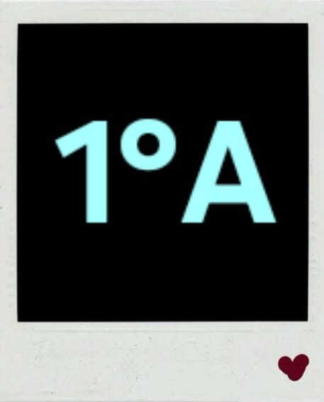
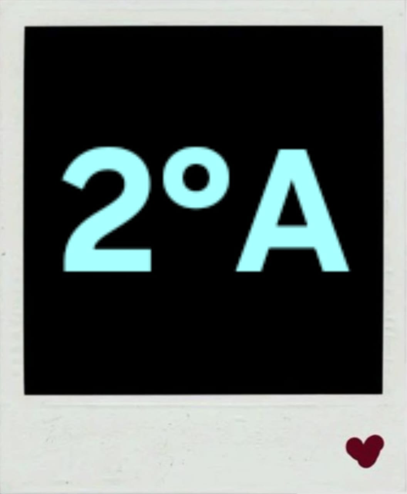
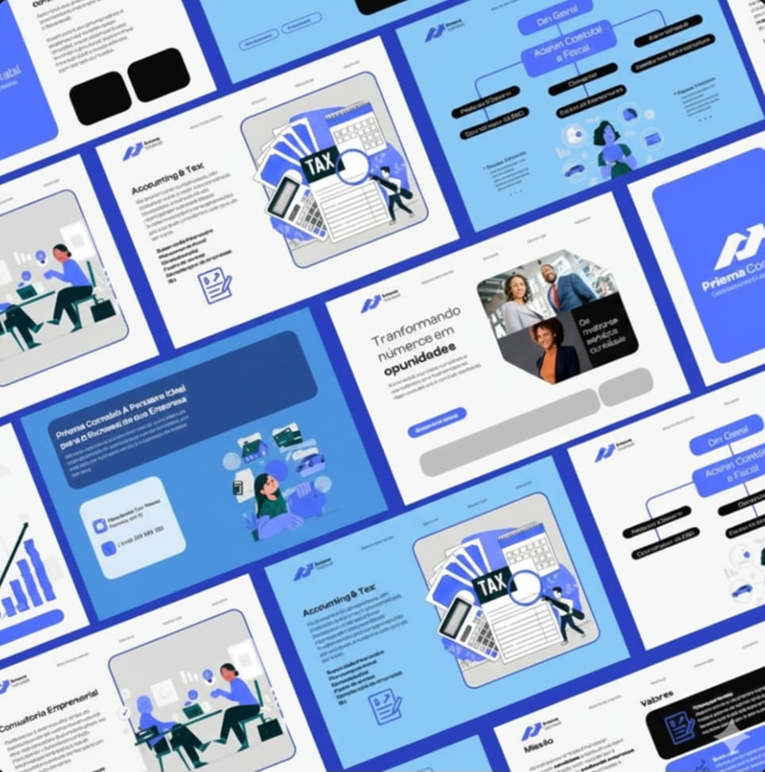
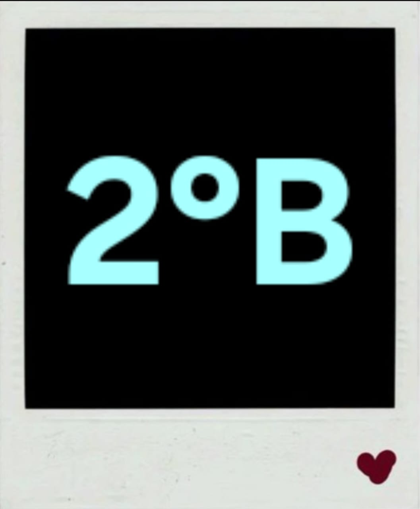
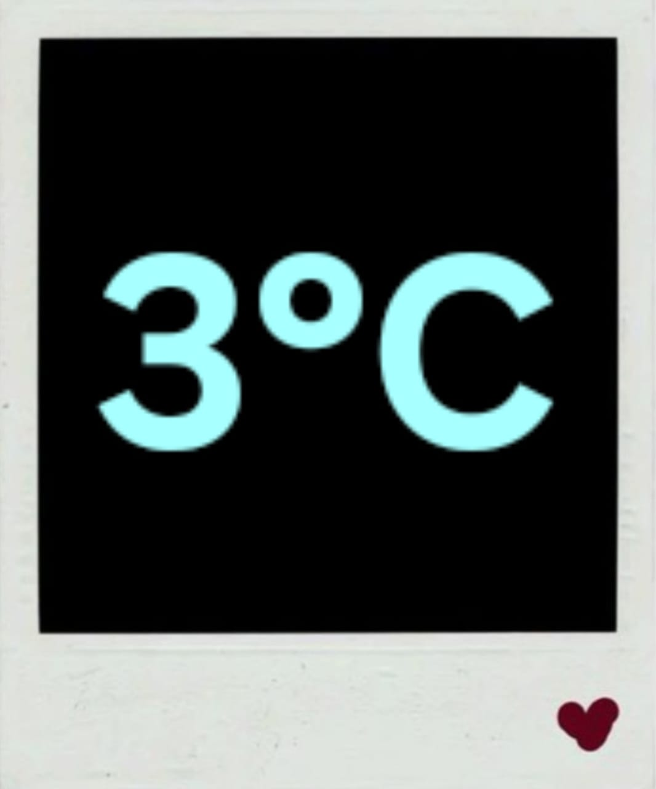
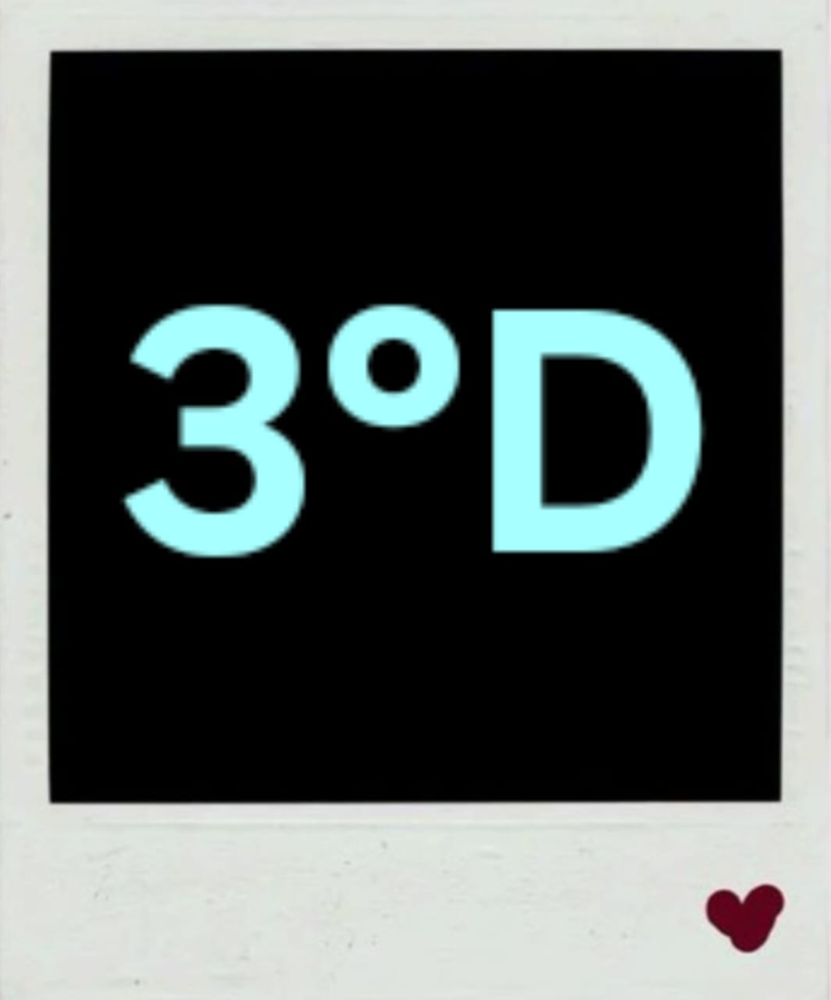

Sobre o Projeto
O Projeto P.I.A.S. (Projeto Integrado de Administração e Sistemas) é uma feira de negócios e uma atividade interdisciplinar de grande relevância no C.C.M. Tarquínio Santos.
Idealizado e executado pelos alunos do Ensino Médio (1ª, 2ª e 3ª séries), o projeto tem como objetivo principal transformar a teoria em prática de forma empreendedora.
- O que os alunos fazem: Os estudantes formam suas próprias empresas (ou startups) e desenvolvem soluções de negócios reais.
- Foco Pedagógico: Através do projeto, eles aplicam e demonstram proficiência em conceitos de Administração, Empreendedorismo e Programação, utilizando a tecnologia para gerenciar suas empresas.
- Propósito: Colocar em prática o conhecimento adquirido em sala, aprimorando habilidades essenciais como trabalho em equipe, criatividade, planejamento financeiro e resolução de problemas.
O P.I.A.S. é a vitrine onde os alunos
"Promovem ideias, conectando o futuro"


Sistemas Para Pedidos
Desenvolvimento de páginas e aplicações voltadas à manipulação e controle de pedidos em estabelecimentos como cinemas, cafeterias e restaurantes. O foco é fornecer uma plataforma para que a equipe do local gerencie as opções disponíveis, o fluxo de pedidos e as informações de venda de forma simples e intuitiva.


Divulgações Empresariais
Desenvolvidos para funcionar como um cartões de visita digital e eventualmente comercialização. Oferecem informações sobre a identidade das empresas, serviços e formas de contato. O objetivo é fornecer uma plataforma online acessível onde visitantes possam entender o negócio rapidamente.

Empreendedorismo
O objetivo é a criação e validação do modelo de negócio. Os alunos focam na transformação de ideias em projetos economicamente viáveis, definindo a proposta de valor, o público-alvo e as estratégias de mercado para o futuro empreendimento.

Aplicações e Sistemas
Foco no controle de rotinas para negócios específicos: oficinas, barbearias, academias, estoques, etc. Os grupos realizaram o levantamento de requisitos e o entendimento do negócio para cada aplicação desenvolvida.

Planos de Negócios
Estruturação completa de empresas, envolvendo divulgação, atendimento, fluxo de caixa e logística. Projetos incluem setores de varejo, beleza, saúde, eventos, etc.